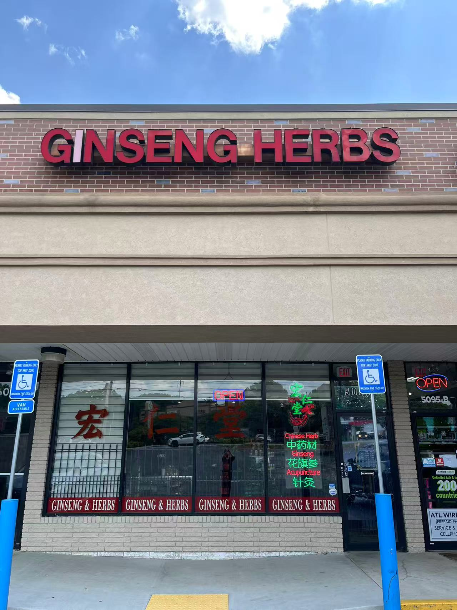

WE’RE HERE TO HELP
We’d love to
welcome you.
You’ll find Hung-Ren Ginseng & Herbs on Buford Highway in Doraville. Visit us for ginseng and Chinese herbs, or call ahead to arrange an acupuncture appointment.

Find us in Doraville.
STORE HOURS
Open daily
10:00 AM–6:00 PM
For acupuncture appointments, please call to confirm availability. Appointment times may differ from store hours.
Before you visit
How do I inquire about a product?
Call (770) 452-8289 with the herb name, brand, or product details. We can discuss current availability and prices.
How do I book an acupuncture appointment?
Please call the store to arrange a time with Ling Liu. Store opening hours and practitioner availability may differ, so please confirm before you visit.
Which languages do you speak?
We welcome inquiries in Chinese and English.
APPOINTMENTS
Call to arrange
your appointment.
Speak with us about acupuncture services and available appointment times with Ling Liu.
Call to bookPlease call ahead. Acupuncture appointment times may differ from store hours.